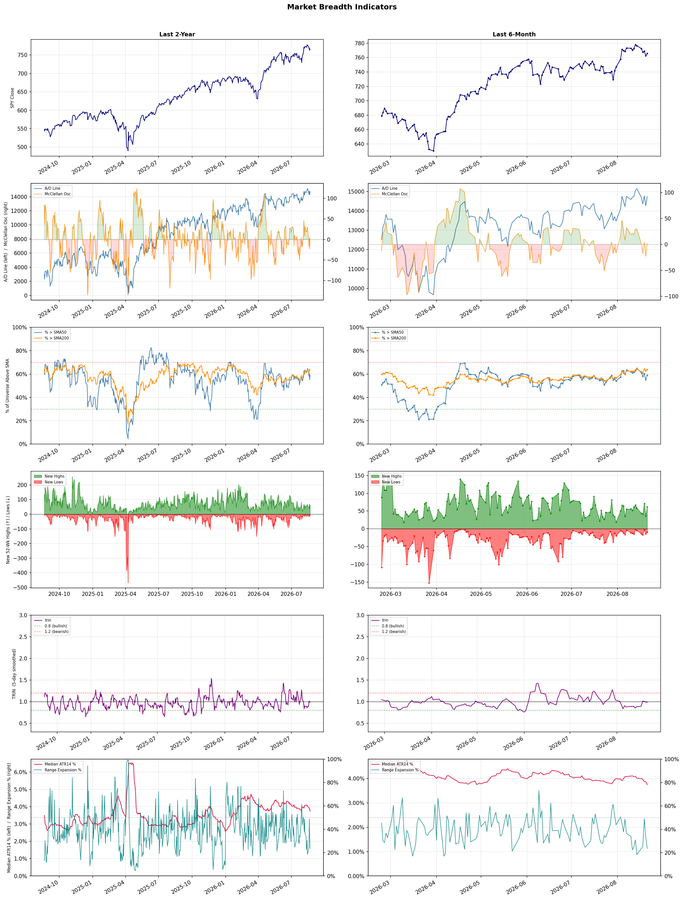

A daily market breadth and sector rotation report for active investors
| Item | Read |
|---|---|
| Regime | Selective Risk-On |
| Risk posture | Selective |
| Universe | 1,331 stocks tracked · 62 new 52-week highs · 30 active swing setups |
| Breadth | 59.0% of tracked stocks are above SMA50 — neutral range, new highs exceed new lows (62 vs 9) |
| Leadership | Diagnostics & Research, Health Information Services, and Oil & Gas Refining & Marketing |
| Weakest groups | Utilities - Independent Power Producers, Footwear & Accessories, and Solar |
Use this report to prioritize research and chart review; validate entries, stops, liquidity, earnings, and risk before acting.
| Item | Read |
|---|---|
| Primary read | Selective Risk-On regime with Selective risk posture. |
| Research queue | TWST, PSNL, WGS, NTRA, IQV |
| Leadership focus | Diagnostics & Research, Health Information Services, and Oil & Gas Refining & Marketing |
| Caution list | Utilities - Independent Power Producers, Footwear & Accessories, and Solar |
| Review prompt | Check extension risk, chart location, fundamentals, valuation, and earnings before using any research row. |
| Item | Read |
|---|---|
| Primary read | 1 active risk warnings; use screen output as watchlist input only. |
| Bullish screens | A, ILMN, IQV, HTFL, TXG |
| Bearish screens | TTD, WB, PEG, RUN |
| Alerts / levels | Automated trigger, stop, ATR, liquidity, reward/risk, and event-risk levels are pending future enrichment. |
| Review prompt | Open the linked chart, define trigger and invalidation, then check liquidity and event risk independently. |
Risk Posture: Selective — screen backdrop supports selective research in leading industries
Metric context: McClellan below -50 = elevated selling pressure; below -100 = washout territory. Range Expansion = share of stocks with daily range above their 20-day average. Signal Density = share of tracked names appearing in signal screens.
| Breadth Date | % > SMA50 | % > SMA200 | New Highs | New Lows | McClellan | Median Range | Avg Range | Median ATR14 | Range Expansion | Signal Density |
|---|---|---|---|---|---|---|---|---|---|---|
| 2026-08-21 | 59.0% | 63.9% | 62 | 9 | 2.3 | 2.8% | 3.4% | 3.7% | 23.6% | 2.6% |

Prior comparison date: August 20, 2026
| Metric | Prior | Current | Change |
|---|---|---|---|
| Regime | Selective Risk-On | Selective Risk-On | unchanged |
| Risk Posture | Selective | Selective | unchanged |
| % > SMA50 | 52.2% | 59.0% | +6.9 pts |
| % > SMA200 | 55.9% | 63.9% | +8.0 pts |
| New Highs | 11 | 62 | +51 |
| New Lows | 3 | 9 | -6 |
Top-10 industries entering: none. Top-10 industries leaving: none. New multi-signal long setups: A, AR, BDX, CNQ, CRGY, FCX, HTFL, IHS, ILMN, IQV. New multi-signal short setups: none.
| Status | Tickers | Read |
|---|---|---|
| Added | AJG, AR, ARX, AVTX, BDX, CNQ, CRGY, HTFL | New technical screen matches vs prior report. |
| Removed | AGI, APA, ARIS, ATAI, CERT, COP, CRSR, DHR | No longer present in today's technical screen matches. |
| Still Active | A, ABSI, AEM, APPS, BRO, BXSL, FCX, FSLY | Appeared in both current and prior reports. |
| Promoted | A, FCX | Model Screen Score improved by at least 15 points. |
| Downgraded | none | Model Screen Score declined by at least 15 points. |
| Direction | Industry | ETF | Prior Rank | Current Rank | Days | Rank Change |
|---|---|---|---|---|---|---|
| Rose | Copper | COPX | 84 | 4 | 42 | +80 |
| Rose | Gold | GDX | 86 | 6 | 35 | +80 |
| Rose | Oil & Gas E&P | XOP | 85 | 9 | 42 | +76 |
| Rose | Oil & Gas Integrated | XLE | 82 | 14 | 42 | +68 |
| Rose | Financial Data & Stock Exchanges | N/A | 76 | 18 | 42 | +58 |
Bull: Copper is experiencing a bullish trend primarily due to its critical role in the electrification of industries and the AI boom, as highlighted by the headlines discussing COPX as a key player in the "electrification squeeze" and the "pick-and-shovel AI trade." Additionally, the significant price increase of Southern Copper Corp, along with the broader market's shift towards copper as a vital commodity—akin to crude oil—indicates a growing demand fueled by infrastructure investments and technological advancements, positioning copper as a preferred asset in a recovering economy.
Bear: While the bullish narrative surrounding copper often highlights its role in electrification and AI, this overlooks the potential for oversupply and cyclical downturns in commodity markets. Additionally, the recent surge in prices may be driven more by speculative trading and short-term market sentiment rather than sustainable demand fundamentals, especially as global economic uncertainties, such as inflation and geopolitical tensions, could dampen industrial activity and investment in infrastructure. Therefore, the long-term outlook for copper may be clouded by these risks, suggesting that the current bullish trend could be more fragile than it appears.
Verdict: Copper's bullish trend is primarily driven by its essential role in electrification and technological advancements, particularly in the context of the AI boom and infrastructure investments. However, investors should remain cautious of potential oversupply and cyclical downturns, as speculative trading and global economic uncertainties could undermine the sustainability of this demand, suggesting a need for careful monitoring of market fundamentals.
Sources: Yahoo Finance, Google News
Bull: Gold is experiencing a rise in relative strength primarily due to a significant drop in Treasury yields, as highlighted by the headlines regarding Bessent's bond buyback plan, which has created an attractive environment for gold as a non-yielding asset. Additionally, the bullish sentiment from Morgan Stanley and the notable performance of gold mining stocks, as indicated by GDX's best day in nearly four years, suggests that investors are increasingly seeking safe-haven assets amid market volatility, particularly in the wake of falling Dow Jones futures and pressures in other sectors like retail.
Bear: While the recent drop in Treasury yields and bullish sentiment from analysts like Morgan Stanley may suggest a favorable environment for gold, it is essential to consider that this rise could be largely driven by short-term market reactions rather than fundamental strength. Additionally, the ongoing pressures in the broader economy, including rising oil prices and mixed earnings reports from major retailers, could indicate underlying economic instability that may eventually dampen demand for gold as a safe-haven asset. Furthermore, the gold mining sector's performance may not be sustainable if production costs continue to rise or if the anticipated demand fails to materialize, leading to potential overvaluation in the current market.
Verdict: The recent rise in gold prices is fundamentally driven by a significant drop in Treasury yields, which enhances gold's appeal as a non-yielding safe-haven asset amidst market volatility and economic uncertainty. However, investors should remain cautious of the bear case, as underlying economic pressures, such as rising oil prices and mixed retail earnings, could signal instability that may eventually reduce demand for gold and lead to potential overvaluation in the mining sector.
Sources: Yahoo Finance, Google News
Bull: The rising relative strength of the Oil & Gas E&P sector can be attributed to a combination of surging oil prices, which recently topped $100 per barrel for the first time since May, and a growing investor interest in energy stocks amid market volatility, as highlighted by the headlines indicating that oil stocks are outperforming in a declining broader market. Additionally, the significant year-to-date gains of the XOP ETF, up 42%, underscore a robust demand for oil and gas equities, particularly as companies like Antero Resources and Magnolia Oil & Gas experience soaring share prices, reflecting strong fundamentals and investor confidence in the sector's resilience.
Bear: While the recent surge in oil prices and the strong performance of the XOP ETF may seem promising, this rally could be short-lived due to several underlying vulnerabilities. The oil market remains highly volatile, influenced by geopolitical tensions and potential supply chain disruptions, which could quickly reverse gains. Furthermore, the significant rise in the ETF's value, coupled with a narrow focus on a few outperforming stocks, raises concerns about overvaluation and the sustainability of investor enthusiasm in a potentially weakening economic environment.
Verdict: The Oil & Gas E&P sector's rise is fundamentally driven by surging oil prices, recently surpassing $100 per barrel, and heightened investor interest in energy stocks amid broader market volatility, as evidenced by the strong performance of the XOP ETF. However, key risks remain, particularly from geopolitical tensions and supply chain disruptions that could undermine this rally and lead to a rapid reversal in stock prices, suggesting investors should remain cautious and consider diversifying their exposure.
Sources: Yahoo Finance, Google News
Bull: The Oil & Gas Integrated sector is likely experiencing a rise in relative strength due to the anticipated benefits from El Niño, which could lead to increased energy demand for heating and cooling, as suggested by the headline "El Nino Raises Risks: ETF Areas Likely to Benefit." Additionally, the positive sentiment reflected in articles highlighting the "Best Energy Stocks to Buy Now" and "3 U.S. Integrated Energy Stocks Poised to Weather Industry Challenges" indicates a growing investor confidence in the sector's resilience and potential for growth amid broader market fluctuations.
Bear: While the bull thesis highlights potential benefits from El Niño and positive sentiment in the media, it overlooks the fundamental challenges facing the Oil & Gas Integrated sector, including ongoing geopolitical tensions, regulatory pressures for cleaner energy, and the volatility of crude oil prices. Additionally, the mixed performance of energy stocks, as indicated by recent sector updates, suggests that investor confidence may be more fragile than it appears, with potential headwinds that could undermine any short-term gains.
Verdict: The Oil & Gas Integrated sector's rising strength can be attributed to increased energy demand driven by the anticipated impacts of El Niño, which may enhance heating and cooling needs. However, investors should remain cautious due to fundamental challenges such as geopolitical tensions, regulatory pressures for cleaner energy, and crude oil price volatility, which could undermine any short-term gains and create significant headwinds for the sector's performance.
Sources: Yahoo Finance, Google News
Bull: The Financial Data & Stock Exchanges sector is likely experiencing rising relative strength due to the robust performance of tech stocks, as highlighted by the "Strong AI Earnings" report, which fuels investor confidence and trading activity. Additionally, the ongoing discussions around ESG investing, as noted in the growth report, indicate a shift towards sustainable investing practices, further enhancing the demand for financial data services that support these trends. Together, these factors contribute to increased trading volumes and market participation, driving the sector's relative strength upward.
Bear: While the bull analyst attributes rising relative strength in the Financial Data & Stock Exchanges sector to robust tech performance and ESG trends, this overlooks the potential volatility and overvaluation risks inherent in the tech sector, which could lead to a sharp correction. Furthermore, the lack of resolution in geopolitical tensions, such as the ongoing situation with Iran, could create uncertainty that dampens investor sentiment and trading activity, undermining the supposed strength in the financial data sector.
Verdict: The Financial Data & Stock Exchanges sector is likely benefiting from heightened trading activity driven by strong tech earnings and a growing focus on ESG investing, which enhance demand for financial data services. However, investors should remain cautious of potential volatility and overvaluation risks in the tech sector, as unresolved geopolitical tensions could dampen market sentiment and lead to significant corrections. Monitoring these external factors will be crucial for assessing the sustainability of the sector's upward momentum.
Sources: Google News
| Direction | Industry | ETF | Prior Rank | Current Rank | Days | Rank Change |
|---|---|---|---|---|---|---|
| Fell | Airlines | N/A | 4 | 82 | 42 | -78 |
| Fell | REIT - Healthcare Facilities | XLRE | 3 | 73 | 28 | -70 |
| Fell | REIT - Retail | N/A | 9 | 76 | 35 | -67 |
| Fell | Footwear & Accessories | N/A | 21 | 87 | 42 | -66 |
| Fell | Building Products & Equipment | XHB | 16 | 79 | 42 | -63 |
Bear: While the bull analyst highlights rising operational costs and fluctuating consumer demand as primary concerns, it's important to recognize that the airline industry is also grappling with significant long-term headwinds such as labor shortages, regulatory pressures, and the ongoing threat of economic downturns that could severely impact travel demand. Additionally, the competitive landscape is intensifying, with low-cost carriers gaining market share and traditional airlines struggling to maintain pricing power, which could further erode margins and investor confidence in the sector.
Bull: The airline industry is currently experiencing a decline in relative strength largely due to market concerns surrounding rising operational costs and fluctuating consumer demand, as highlighted in recent headlines discussing the performance of major players like Delta and American Airlines. Additionally, the negative sentiment reflected in American Airlines' 6% stock decline this year suggests investor caution amid competitive pressures and the potential for market volatility, as indicated by discussions around which airline stock will dominate in the coming years. This environment may contribute to a perception of instability in the sector, impacting investor confidence and relative performance against other industries.
Verdict: The airline industry's current decline can be attributed to rising operational costs and fluctuating consumer demand, compounded by significant long-term challenges such as labor shortages and regulatory pressures. Investors should be cautious, as the intensifying competition from low-cost carriers may further erode margins and pricing power, posing a key risk to the sector's recovery. It is advisable to closely monitor operational efficiencies and consumer trends before making investment decisions in this space.
Sources: Google News
Bear: While the bull analyst attributes the relative weakness of Healthcare Facilities REITs to a shift in investor focus towards financial stocks, this overlooks fundamental challenges facing the healthcare sector, such as rising operational costs, labor shortages, and regulatory pressures that could impact profitability. Furthermore, the broader economic environment, characterized by potential interest rate hikes and inflationary pressures, may lead to increased borrowing costs for REITs, making them less attractive compared to sectors that are currently benefiting from a more favorable economic outlook. This suggests that the challenges facing healthcare REITs are not merely a matter of market sentiment but are rooted in deeper structural issues that could hinder their performance in the near term.
Bull: The relative weakness of the Healthcare Facilities REIT sector can be attributed to the broader market focus on financial stocks, as indicated by multiple headlines highlighting their recent gains and afternoon trading activity. This shift in investor attention could be diverting capital away from healthcare REITs, despite their long-term stability and growth potential, especially as analysts are optimistic about the sector's prospects for 2026 and its suitability for retirement portfolios, as noted in the articles from The Motley Fool and U.S. News. Additionally, the overall market sentiment appears to be favoring sectors perceived as more immediately responsive to economic conditions, such as financials, which may be overshadowing the defensive qualities of healthcare REITs.
Verdict: The recent decline in Healthcare Facilities REITs is primarily driven by fundamental challenges such as rising operational costs, labor shortages, and regulatory pressures that threaten profitability, compounded by potential interest rate hikes that could increase borrowing costs. While investor sentiment may be shifting towards financial stocks, the key risk is that these structural issues within the healthcare sector could persist, making healthcare REITs less attractive in the near term. Investors should closely monitor these operational challenges and consider diversifying their portfolios to mitigate risks associated with this sector's performance.
Sources: Yahoo Finance, Google News
Bear: While the bull analyst attributes the relative weakness of Retail REITs to broader economic uncertainties and evolving consumer behaviors, it is crucial to recognize that the retail landscape is undergoing significant structural changes, including the rise of e-commerce and shifts in consumer spending patterns. Additionally, the focus on growth in emerging markets like India may divert capital and investor interest away from established Retail REITs, exacerbating their underperformance as they struggle to adapt to a changing competitive environment and declining foot traffic in physical retail spaces.
Bull: The relative weakness of the Retail REIT sector can be attributed to broader economic uncertainties and changing consumer behaviors, as highlighted by the emphasis on how to invest in REITs in the coming years and the focus on leasing strength and low supply in specific markets. Additionally, the competitive landscape is evolving, with investors increasingly looking at diverse real estate opportunities, as suggested by the discussions around strong growth plans in emerging markets like India. This shift in attention may be impacting the relative strength of Retail REITs compared to other sectors.
Verdict: The Retail REIT sector is experiencing a downturn primarily due to structural shifts in consumer behavior, particularly the rise of e-commerce, which is diminishing foot traffic in physical retail spaces. This trend, coupled with increasing investor interest in growth opportunities in emerging markets like India, poses a significant risk to established Retail REITs as they struggle to adapt. Investors should closely monitor these evolving dynamics and consider diversifying their portfolios to include sectors less affected by these changes.
Sources: Google News
Bear: While the bull analyst acknowledges macroeconomic pressures, they underestimate the long-term implications of changing consumer behavior and regulatory environments. The new EU regulations aimed at reducing unsold inventory could significantly disrupt supply chains, leading to increased costs and operational inefficiencies that may not only dampen profitability but also stifle innovation in product offerings. Furthermore, as consumers become more environmentally conscious, brands that fail to adapt to sustainable practices may lose market share, exacerbating the industry's declining relative strength.
Bull: The Footwear & Accessories sector is experiencing a decline in relative strength primarily due to broader macroeconomic pressures affecting consumer discretionary spending, as highlighted by the Q1 earnings results from key players like Boot Barn and Deckers, which may reflect cautious consumer sentiment. Additionally, the introduction of new EU regulations aimed at curbing the destruction of unsold inventory could create operational challenges and increased costs for companies in the industry, further dampening investor sentiment despite the potential for growth highlighted in recent articles.
Verdict: The Footwear & Accessories sector's decline is fundamentally driven by macroeconomic pressures that are curbing consumer discretionary spending, compounded by new EU regulations that could disrupt supply chains and increase operational costs. A key risk from the bear case is that brands failing to adapt to sustainable practices may face significant market share losses, further exacerbating the industry's challenges. Investors should closely monitor consumer sentiment and regulatory impacts to gauge potential recovery or continued decline in this sector.
Sources: Google News
Bear: While the bull analyst highlights the potential long-term benefits of the housing affordability bill, it is crucial to recognize that such legislative measures often take time to materialize into tangible market improvements. Furthermore, the significant decline of Opendoor, combined with the overall bearish sentiment in the housing market, raises concerns about the sustainability of any short-term gains in the sector. Investors may remain cautious as rising interest rates and persistent inflation pressures continue to dampen housing demand, further exacerbating the relative weakness of the Building Products & Equipment sector.
Bull: The relative weakness in the Building Products & Equipment sector, as represented by the XHB ETF, can be attributed to broader concerns in the housing market, particularly highlighted by the significant decline of Opendoor, which is down 42% in 2026, indicating challenges in the iBuyer segment. Additionally, while a landmark housing affordability bill becoming law may provide long-term support, short-term volatility in housing stocks, as seen with fluctuating performances among competitors like Offerpad and Zillow, suggests a cautious sentiment among investors. This environment may lead to a preference for quality stocks, further impacting the relative strength of the building products sector.
Verdict: The Building Products & Equipment sector is experiencing a downturn primarily due to ongoing challenges in the housing market, including the significant decline of iBuyer companies like Opendoor and broader concerns about housing affordability and demand. The key risk from the bear case is that legislative measures, such as the housing affordability bill, may take time to have a meaningful impact, while rising interest rates and inflation continue to suppress housing demand, potentially leading to further weakness in the sector. Investors should consider focusing on quality stocks with strong fundamentals to navigate this volatile environment.
Sources: Yahoo Finance, Google News
| Industry | Rank | ETF | 7d | 14d | 28d | 42d | Chg 42d | Size | 20D | 60D | Composite | Active Setups |
|---|---|---|---|---|---|---|---|---|---|---|---|---|
| Diagnostics & Research | 1 | N/A | 2 | 1 | 14 | 7 | +6 | 16 | 23.6% | 53.8% | 0.969 | 0 |
| Health Information Services | 2 | N/A | 3 | 2 | 11 | 8 | +6 | 12 | 26.5% | 48.2% | 0.923 | 0 |
| Oil & Gas Refining & Marketing | 3 | CRAK | 5 | 5 | 1 | 10 | +7 | 7 | 11.1% | 39.5% | 0.898 | 0 |
| Copper | 4 | COPX | 15 | 7 | 64 | 84 | +80 | 6 | 30.5% | 17.6% | 0.893 | 0 |
| Software - Application | 5 | IGV | 4 | 3 | 26 | 29 | +24 | 74 | 22.9% | 26.7% | 0.891 | 1 |
| Gold | 6 | GDX | 19 | 33 | 79 | 81 | +75 | 25 | 39.7% | 18.2% | 0.865 | 0 |
| Insurance Brokers | 7 | N/A | 6 | 17 | 5 | 14 | +7 | 6 | 12.9% | 29.2% | 0.862 | 0 |
| Biotechnology | 8 | XBI | 14 | 31 | 23 | 5 | -3 | 91 | 15.2% | 28.0% | 0.861 | 1 |
| Oil & Gas E&P | 9 | XOP | 36 | 53 | 29 | 85 | +76 | 26 | 10.4% | 12.3% | 0.845 | 2 |
| Medical Devices | 10 | N/A | 8 | 20 | 32 | 28 | +18 | 20 | 14.0% | 22.5% | 0.818 | 1 |
Rank columns (7d–42d) show the industry's rank that many trading days ago — lower is stronger. Chg 42d = rank change vs 42 trading days ago — positive means the industry moved up. 20D and 60D are the mean stock return within the industry over that period. Active Setups: count of today's swing-trade candidates from this industry appearing across all signal screens.
| Industry | Rank | ETF | 7d | 14d | 28d | 42d | Chg 42d | Size | 20D | 60D | Composite | Active Setups |
|---|---|---|---|---|---|---|---|---|---|---|---|---|
| Utilities - Independent Power Producers | 88 | XLU | 78 | 87 | 78 | 54 | -34 | 5 | -8.6% | -17.5% | 0.073 | 0 |
| Footwear & Accessories | 87 | N/A | 85 | 72 | 49 | 21 | -66 | 5 | -8.9% | -13.6% | 0.078 | 0 |
| Solar | 86 | TAN | 88 | 86 | 85 | 53 | -33 | 8 | -8.2% | -39.3% | 0.102 | 0 |
| Chemicals | 85 | N/A | 87 | 88 | 77 | 87 | +2 | 8 | -8.0% | -24.8% | 0.143 | 1 |
| Utilities - Regulated Electric | 84 | XLU | 81 | 80 | 40 | 44 | -40 | 29 | -7.4% | -4.6% | 0.144 | 0 |
| Integrated Freight & Logistics | 83 | N/A | 82 | 78 | 25 | 35 | -48 | 7 | -10.7% | -5.5% | 0.163 | 0 |
| Airlines | 82 | N/A | 40 | 18 | 50 | 4 | -78 | 8 | -5.2% | -5.1% | 0.212 | 0 |
| Utilities - Renewable | 81 | N/A | 80 | 85 | 86 | 83 | +2 | 6 | 0.1% | -26.6% | 0.225 | 0 |
| REIT - Diversified | 80 | N/A | 86 | 76 | 38 | 73 | -7 | 5 | -5.3% | -4.5% | 0.225 | 0 |
| Building Products & Equipment | 79 | XHB | 61 | 47 | 52 | 16 | -63 | 8 | -4.8% | 1.9% | 0.228 | 0 |
Rank columns (7d–42d) show the industry's rank that many trading days ago — lower is stronger. Chg 42d = rank change vs 42 trading days ago — positive means the industry moved up. 20D and 60D are the mean stock return within the industry over that period. Active Setups: count of today's swing-trade candidates from this industry appearing across all signal screens.
These are research candidates from top-ranked stocks, capped at five names per industry to avoid over-concentration. Returns shown (60D, 120D, 250D) are historical — they reflect where prices have already moved, not forward expectations. Extension Risk flags names that may require extra patience or a better entry point. They are not buy signals.
Chart: TV = TradingView chart (opens in browser); PDF = local chart file (if downloaded).
| Ticker | Name | Industry | Industry Rank | Market Cap | 60D Hist | 120D Hist | 250D Hist | Extension Risk | Research Reason | Chart |
|---|---|---|---|---|---|---|---|---|---|---|
| TWST | Twist Bioscience | Diagnostics & Research | 1 | N/A | 126.9% | 217.3% | 409.2% | Very extended | Top-ranked in industry; very extended | TV |
| PSNL | Personalis | Diagnostics & Research | 1 | N/A | 93.7% | 102.9% | 280.5% | Extended | Top-ranked in industry; extended | TV |
| WGS | GeneDx Holdings | Diagnostics & Research | 1 | N/A | 80.6% | 17.3% | -32.3% | Extended | Top-ranked in industry; extended | TV |
| NTRA | Natera | Diagnostics & Research | 1 | N/A | 63.5% | 65.9% | 100.5% | Extended | Top-ranked in industry; extended | TV |
| IQV | IQVIA Holdings | Diagnostics & Research | 1 | N/A | 56.9% | 49.1% | 35.9% | Extended | Top-ranked in industry; extended | TV |
| TXG | 10x Genomics | Health Information Services | 2 | N/A | 155.3% | 181.4% | 355.4% | Very extended | Top-ranked in industry; very extended | TV |
| HTFL | Heartflow | Health Information Services | 2 | N/A | 69.9% | 106.9% | 70.6% | Extended | Top-ranked in industry; extended | TV |
| VEEV | Veeva Systems | Health Information Services | 2 | N/A | 56.4% | 36.6% | -14.8% | Extended | Top-ranked in industry; extended | TV |
| TEM | Tempus AI | Health Information Services | 2 | N/A | 54.1% | 36.4% | -9.7% | Extended | Top-ranked in industry; extended | TV |
| SDGR | Schrodinger | Health Information Services | 2 | N/A | 48.9% | 62.2% | -3.0% | Constructive | Top-ranked in industry | TV |
| PBF | PBF Energy | Oil & Gas Refining & Marketing | 3 | N/A | 90.2% | 88.7% | 210.2% | Extended | Top-ranked in industry; extended | TV |
| MPC | Marathon Petroleum | Oil & Gas Refining & Marketing | 3 | N/A | 46.4% | 73.0% | 114.6% | Constructive | Top-ranked in industry | TV |
| VLO | Valero Energy | Oil & Gas Refining & Marketing | 3 | N/A | 45.7% | 63.7% | 145.1% | Constructive | Top-ranked in industry | TV |
| DINO | HF Sinclair | Oil & Gas Refining & Marketing | 3 | N/A | 43.8% | 83.2% | 107.4% | Constructive | Top-ranked in industry | TV |
| PSX | Phillips 66 | Oil & Gas Refining & Marketing | 3 | N/A | 39.8% | 53.5% | 92.4% | Constructive | Top-ranked in industry | TV |
| ERO | Ero Copper | Copper | 4 | N/A | 39.9% | 18.1% | 173.6% | Constructive | Top-ranked in industry | TV |
| TGB | Taseko Mines | Copper | 4 | N/A | 31.7% | 4.9% | 189.9% | Constructive | Top-ranked in industry | TV |
| FCX | Freeport-McMoRan | Copper | 4 | N/A | 20.8% | 12.8% | 79.0% | Constructive | Top-ranked in industry | TV |
| HBM | Hudbay Minerals | Copper | 4 | N/A | 13.1% | 12.5% | 155.3% | Constructive | Top-ranked in industry | TV |
| IE | Ivanhoe Electric | Copper | 4 | N/A | -13.6% | -33.1% | 21.8% | Lagging | Top-ranked in industry; lagging | TV |
These are technical screen matches from existing signal files. They are not trade recommendations. Trigger, stop, ATR, liquidity, reward/risk, and event risk still require separate validation until those inputs are available.
Model Screen Score is weighted by signal count, industry rank, freshness, and setup type. It is not a probability of profit, expected return, or suitability rating. Industry cap: max 3 candidates per industry.
Signal glossary: Momentum Pullback = stock in an uptrend that has pulled back 10–30% and shows re-entry conditions. MA Compression = short- and long-term moving averages converging, often preceding a directional move. Three-Day Up/Down = three consecutive closes in the same direction. New 52Wk High/Low = price reached a new annual extreme.
Chart: TV = TradingView chart (opens in browser); PDF = local chart file (if downloaded).
| Ticker | Industry | Setups | Close | Industry Rank | Signal Count | Model Screen Score | Reason | Chart |
|---|---|---|---|---|---|---|---|---|
| A | Diagnostics & Research | New 52Wk High; Three-Day Up | 159.00 | 1 | 2 | 100 | Multi-signal; top industry breakout | TV |
| ILMN | Diagnostics & Research | New 52Wk High; Three-Day Up | 219.40 | 1 | 2 | 100 | Multi-signal; top industry breakout | TV |
| IQV | Diagnostics & Research | New 52Wk High; Three-Day Up | 259.82 | 1 | 2 | 100 | Multi-signal; top industry breakout | TV |
| HTFL | Health Information Services | New 52Wk High; Three-Day Up | 49.75 | 2 | 2 | 100 | Multi-signal; top industry breakout | TV |
| TXG | Health Information Services | New 52Wk High; Three-Day Up | 65.12 | 2 | 2 | 100 | Multi-signal; top industry breakout | TV |
| FCX | Copper | New 52Wk High; Three-Day Up | 76.66 | 4 | 2 | 93 | Multi-signal; top industry breakout | TV |
| NEM | Gold | New 52Wk High; Three-Day Up | 131.58 | 6 | 2 | 93 | Multi-signal; top industry breakout | TV |
| SSRM | Gold | New 52Wk High; Three-Day Up | 37.77 | 6 | 2 | 93 | Multi-signal; top industry breakout | TV |
| CNQ | Oil & Gas E&P | New 52Wk High; Three-Day Up | 51.40 | 9 | 2 | 85 | Multi-signal; top industry breakout | TV |
| CRGY | Oil & Gas E&P | New 52Wk High; Three-Day Up | 14.06 | 9 | 2 | 85 | Multi-signal; top industry breakout | TV |
| BDX | Medical Instruments & Supplies | New 52Wk High; Three-Day Up | 192.00 | 13 | 2 | 85 | Multi-signal; new-high strength | TV |
| AR | Oil & Gas E&P | MA Compression; Three-Day Up | 37.94 | 9 | 2 | 80 | Multi-signal; top industry setup | TV |
| BXSL | Asset Management | MA Compression; Three-Day Up | 24.76 | 12 | 2 | 80 | Multi-signal; compression setup | TV |
| IHS | Real Estate Services | MA Compression; Three-Day Up | 8.40 | 28 | 2 | 65 | Multi-signal; compression setup | TV |
| APPS | Software - Application | Momentum Pullback | 10.87 | 5 | 1 | 58 | Single-signal; top industry pullback | TV |
| FSLY | Software - Application | Momentum Pullback | 24.95 | 5 | 1 | 58 | Single-signal; top industry pullback | TV |
| GRND | Software - Application | Momentum Pullback | 15.53 | 5 | 1 | 58 | Single-signal; top industry pullback | TV |
| TEM | Health Information Services | Three-Day Up | 72.69 | 2 | 1 | 55 | Single-signal; top industry setup | TV |
| ABSI | Biotechnology | Momentum Pullback | 9.55 | 8 | 1 | 50 | Single-signal; top industry pullback | TV |
| AVTX | Biotechnology | Momentum Pullback | 19.83 | 8 | 1 | 50 | Single-signal; top industry pullback | TV |
| MRNA | Biotechnology | Momentum Pullback | 145.13 | 8 | 1 | 50 | Single-signal; top industry pullback | TV |
| NVCR | Medical Devices | Momentum Pullback | 17.10 | 10 | 1 | 50 | Single-signal; top industry pullback | TV |
| AEM | Gold | Three-Day Up | 216.06 | 6 | 1 | 48 | Single-signal; top industry setup | TV |
| AJG | Insurance Brokers | Three-Day Up | 263.81 | 7 | 1 | 48 | Single-signal; top industry setup | TV |
| ARX | Insurance Brokers | Three-Day Up | 19.59 | 7 | 1 | 48 | Single-signal; top industry setup | TV |
| BRO | Insurance Brokers | Three-Day Up | 72.92 | 7 | 1 | 48 | Single-signal; top industry setup | TV |
Bearish setups — stocks making new lows or showing persistent downside patterns. Validate carefully before acting.
| Ticker | Industry | Setups | Close | Industry Rank | Signal Count | Model Screen Score | Reason | Chart |
|---|---|---|---|---|---|---|---|---|
| TTD | Advertising Agencies | New 52Wk Low; Three-Day Down | 13.18 | 39 | 2 | 40 | Multi-signal; new-low weakness | TV |
| WB | Internet Content & Information | New 52Wk Low; Three-Day Down | 7.03 | 48 | 2 | 35 | Multi-signal; new-low weakness | TV |
| PEG | Utilities - Regulated Electric | New 52Wk Low; Three-Day Down | 72.61 | 84 | 2 | 15 | Multi-signal; new-low weakness | TV |
| RUN | Solar | New 52Wk Low; Three-Day Down | 9.16 | 86 | 2 | 15 | Multi-signal; new-low weakness | TV |
How To Use This Report
| Use | Purpose |
|---|---|
| Market map | Start with breadth, regime, risk warnings, and what changed since the prior report. |
| Industry scan | Use leading, deteriorating, rising, and declining industries to focus research. |
| Research queue | Treat long-term candidates as names for deeper fundamental, valuation, and chart review. |
| Technical review | Treat bullish and bearish screen matches as watchlist inputs that require independent trigger, stop, liquidity, and event-risk checks. |
| Source follow-up | Use chart links and source files to verify raw inputs before relying on any row. |
What This Report Is Not
| Not | Meaning |
|---|---|
| Investment advice | The report does not evaluate personal objectives, risk tolerance, tax situation, account type, or suitability. |
| Buy/sell recommendation | Named tickers are research candidates or screen matches, not recommendations to transact. |
| Price target | The report does not provide fair value estimates, targets, or expected returns. |
| Trade plan | Trigger, stop, sizing, reward/risk, liquidity, and event-risk review remain separate user work. |
| Performance claim | Model Screen Score is not validated historical performance or a forecast of future results. |
| Item | Note |
|---|---|
| Version | Daily Report Methodology v1 |
| Model Screen Score | Screen-fit rank based on signal count, industry rank, freshness, and setup type. |
| Not predictive proof | The score is not expected return, probability of profit, historical validation, or suitability analysis. |
| Industry ranks | Composite industry ranks use existing daily ranking outputs and historical rank columns when available. |
| Research candidates | Long-term rows are research candidates from ranked stocks and leading industries, with historical returns labeled as historical only. |
| Technical matches | Bullish and bearish rows are screen matches requiring independent chart, trigger, stop, liquidity, and event-risk review. |
| Source | Status | Rows | Path |
|---|---|---|---|
| Market breadth | present | 1255 | breadth_20260821.csv |
| Industry composite rankings | present | 88 | all_industry_composite_20260821.csv |
| Top ranked stocks | present | 283 | top_ranked_composite_20260821.csv |
| All ranked stocks | present | 1331 | all_stocks_composite_sorted_20260821.csv |
| Top momentum pullbacks | present | 1479 | top_momentum_pullbacks_20260821.csv |
| MA compression | present | 1479 | ma_compression_stocks_20260821.csv |
| Three-day up/down | present | 172 | three_day_up_down_stocks_20260821.csv |
| New 52-week members | present | 71 | breadth_new_52wk_members_20260821.csv |
This report is generated from automated technical screens and is for informational and research purposes only. It is not investment advice, a solicitation, or a recommendation to buy or sell any security. Past performance is not indicative of future results. You are solely responsible for your own investment decisions. Consult a licensed financial advisor before acting on any information herein.